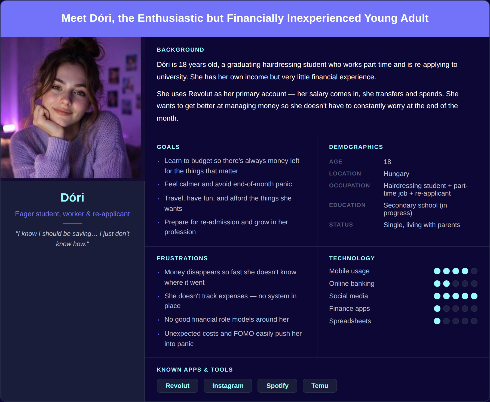
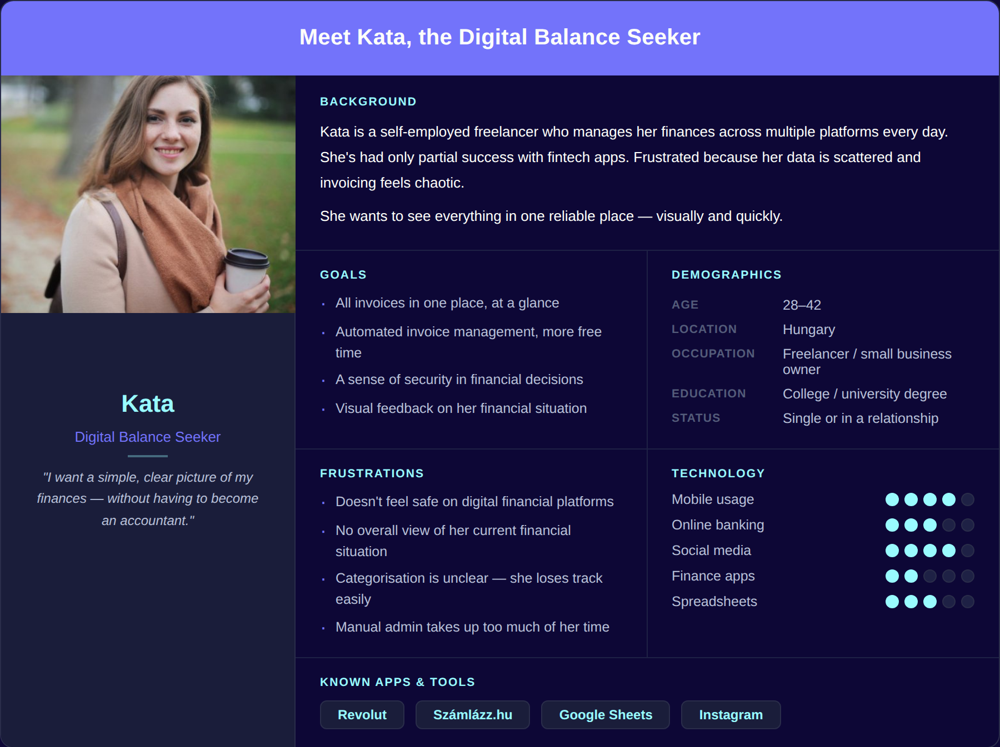
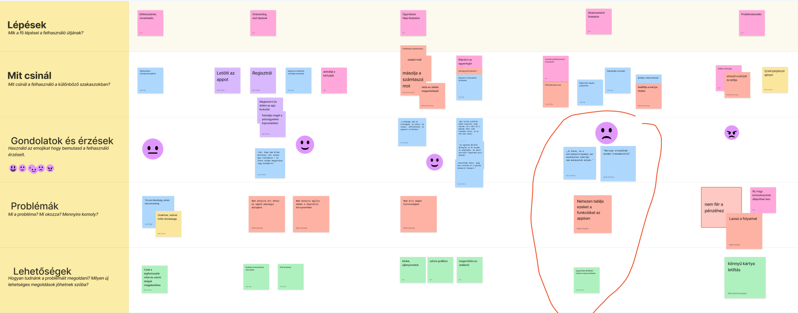

Square 1
A fintech app designed to make money management approachable for younger users.


A fintech app designed to make money management approachable for younger users.
Overview
Square One is a conceptual fintech app for users
aged 16, 28, designed to make financial
management accessible and engaging.
I conducted in-depth interviews with 3 users (aged 18–28), all active mobile banking users managing finances daily.
Research goals:
Findings were synthesized into an empathy map, surfacing deeper motivations beyond explicit answers, especially around financial confidence and the fear of being judged for not knowing enough.


Key insights:
Research findings were synthesized into a structured design framework across three layers.
Personas
Two behavioral personas were developed from interview data and the empathy map:
Grounded in observed patterns, not demographic assumptions.


User Journey
Two complementary journey maps were built to ground decisions in real behavior:
Together they revealed the core issue: not a broken screen, but a repeating stress pattern the product should help break.

Using the Jobs to be Done framework, the core user need was distilled into one statement:
How Might We questions
Ideation started with competitive analysis of Revolut, Wise, OTP, and Erste — reviewing UX flows, navigation patterns, and emotional engagement strategies. Mastercard brand guidelines were also integrated.
Key decisions:

The high-fidelity prototype was built in Figma in both dark and light mode. Dark mode is the primary experience, confirmed as preferred by the target demographic.
Design system highlights:
Testing ran in two rounds, each informing specific design decisions.
Round 1 — Mentor review (3 mentors):
Round 2 — Design community feedback:
Colors were derived from the character to create a cohesive and emotionally engaging experience. The palette balances playfulness with trust, avoiding overly “corporate” fintech visuals.
Space Grotesk was used for key numbers and headings to create a strong visual focus and improve scannability. “Your money, your way.”
Plus Jakarta Sans was chosen for body text due to its high readability and clean appearance, supporting a clear and accessible user experience.
Every screen shows only what the user needs right now
Charts guide the eye first, numbers are there to confirm
Every transaction is traceable, nothing hidden
Key Screens


Onboarding: Offering two onboarding paths supports different user preferences—playful guidance or a more traditional experience.
Dark & light: Dark and light modes offer different visual experiences—playful and character-driven, or clean and minimal.
Cards, savings & chat: Card management features Kami as a visual brand element on the card itself. The savings jar makes goal-based saving tangible and motivating. The chat assistant – powered by Kami – guides users through banking tasks in a friendly, conversational way.